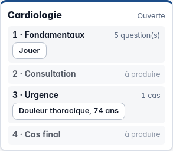
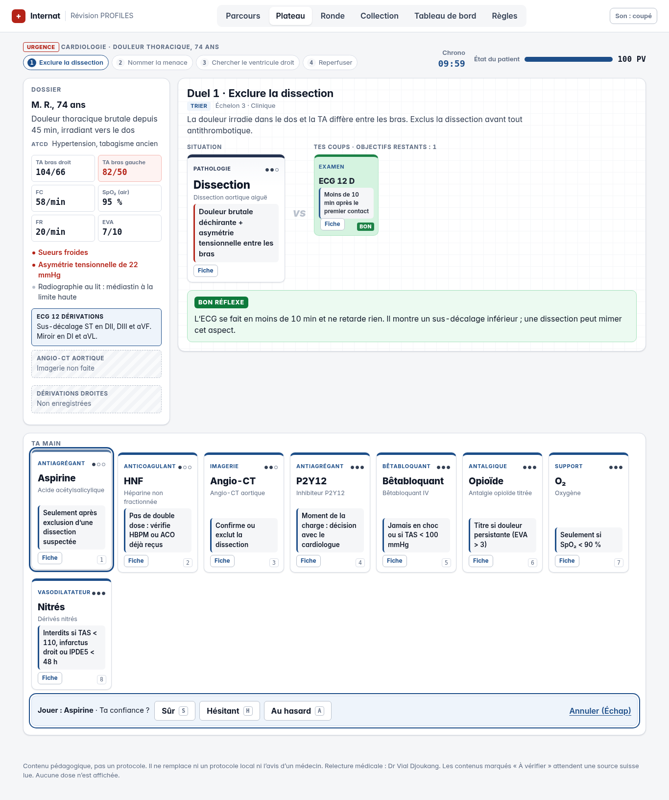
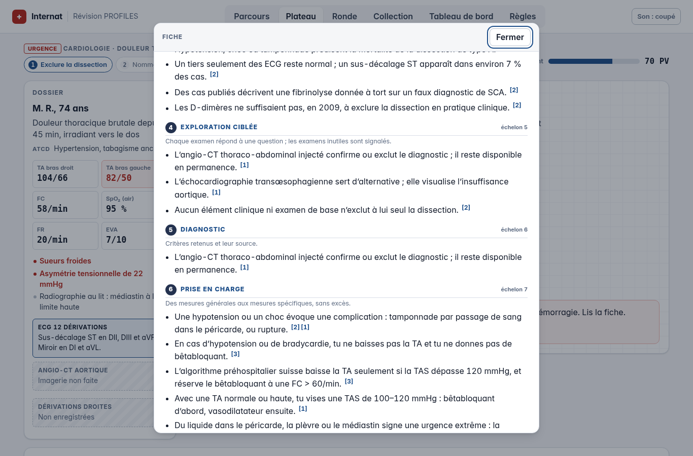
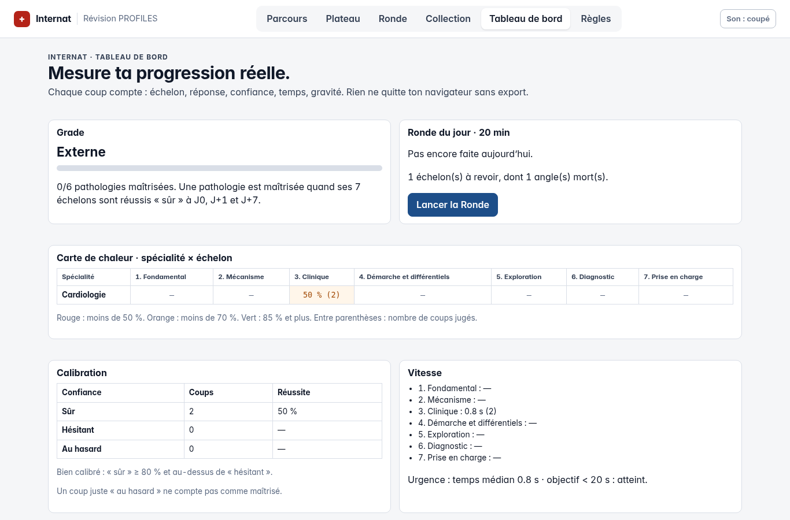

Planche · lot A · générée le 17.11.2026 14:38
Cardiologie
Catalogue initial du prototype : 6 pathologies. À compléter en lot A depuis des sources suisses. Statut du catalogue : catalogue incomplet.
6pathologies au catalogue
0couvertes
3partielles
3manquantes
1cas · 18 cartes
19.4 %« À vérifier » (35/180)
Le jeu




Couverture
| Pathologie | Statut | Cas U / C / final | Échelons sourcés | Il manque | SSP PROFILES |
|---|---|---|---|---|---|
| Infarctus avec sus-décalage ST (STEMI) | Partielle | 1 / 0 / 0 | 2, 3, 4, 5, 6, 7 | un cas Consultation, contenu sourcé aux échelons 1 | S2.5, S2.4, F2.6, F2.2 |
| Infarctus du ventricule droit | Partielle | 1 / 0 / 0 | 4, 5, 6, 7 | un cas Consultation, contenu sourcé aux échelons 1, 2, 3 | S2.5, F2.6, F1.1 |
| Syndrome coronarien aigu sans sus-décalage ST | Manquante | 0 / 0 / 0 | 2, 3, 4, 5, 6, 7 | au moins un cas, un cas Urgence, un cas Consultation, contenu sourcé aux échelons 1 | S2.5, S2.4, F2.2, F2.6 |
| Dissection aortique aiguë | Partielle | 1 / 0 / 0 | 1, 2, 3, 4, 5, 6, 7 | un cas Consultation | S2.5, F1.1, S5.2 |
| Embolie pulmonaire | Manquante | 0 / 0 / 0 | 2, 3, 5, 6, 7 | au moins un cas, un cas Urgence, un cas Consultation, contenu sourcé aux échelons 1, 4 | S2.5, S2.7, S2.6 |
| Péricardite aiguë | Manquante | 0 / 0 / 0 | 2, 3, 4, 5, 6, 7 | au moins un cas, un cas Urgence, un cas Consultation, contenu sourcé aux échelons 1 | S2.5, S2.10, F2.6 |
Couverte : cas exigés présents et 7 échelons sourcés (source suisse hors fondamentaux). Partielle : au moins un cas, exigences incomplètes. Manquante : aucun cas. Toute pathologie fréquente ou grave exige un cas Urgence et un cas Consultation. SSP touchées : 9 sur 248. Liste officielle des SSP : smifk-cims.ch. Contenu pédagogique, pas un protocole ; relecture médicale : Dr Vial Djoukang.